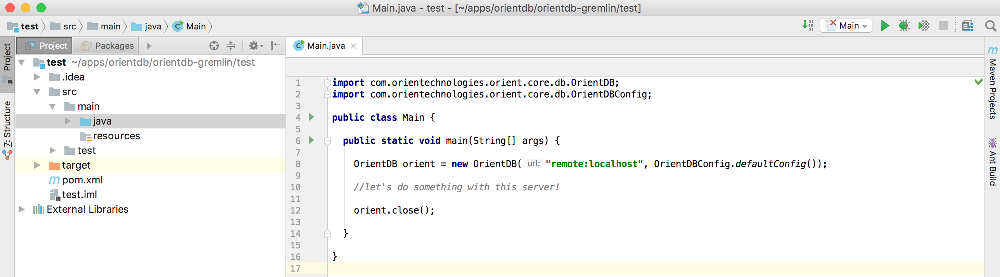
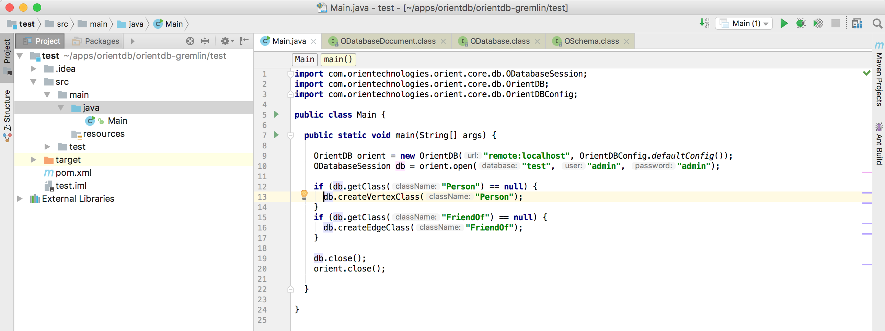
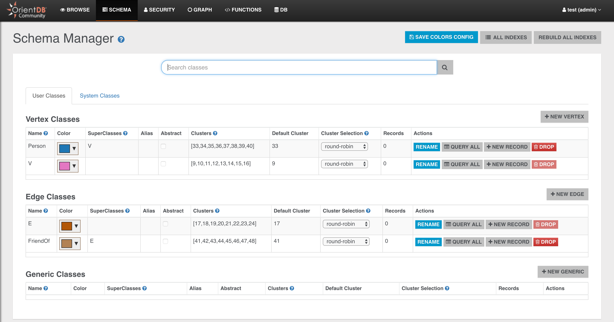

OrientDB for Java Developers in Five Minutes
In the previous step you created your Java application scaffolding in IntelliJ Idea, now it's time to create a Java class that connects to the database and does basic operations
We will write a very simple application with two classes:
- Person: a vertex type containing information about people
- FriendOf: an edge class that connects people together
Step 4/5 - Connect to the DB and create a basic schema
Let's create a simple Java class
- Open the folder src -> main -> java
- Right-click on the java folder and choose New -> Java Class

- Give the class the name you prefer and click OK
- create a main method
Connecting to the DB
Now it's time to connect to OrientDB
- Create an OrientDB object to manage the remote server
- Also invoke a
close()at the end of the method (so that you don't forget it later)
OrientDB orient = new OrientDB("remote:localhost", OrientDBConfig.defaultConfig());
//let's do something with this server!
orient.close();
The first argument of OrientDB() constructor is the URL of the remote database. It's made of two parts:
remote: specifies that we are connecting to a remote (stand-alone) serverlocalhost: the address of the host where OrientDB is running (it can be a URL or an IP, in this case orientdb is running on the local machine)

Until now, we just established a connection with the server, but not with the database itself (we created a db named test, do you remember?).
Now it's time to open a database session (and remember to close it at the end!):
OrientDB orient = new OrientDB("remote:localhost", OrientDBConfig.defaultConfig());
ODatabaseSession db = orient.open("test", "admin", "admin");
//let's do something with this session!
db.close();
orient.close();
Here we are actually connecting to the database. The three parameters are:
test: the database name (we created it a couple of steps before)admin(the first one): the username used to connectadmin(the second one): the password for the connection
By default, when you create a new database, OrientDB creates three users for you: admin, reader, writer; the passwords
for these users are the same as the user names, eg. the password for admin is admin. You can change it later of course, and you can
define more users if needed.
Creating the schema
Now it's time to create a schema for our db. Do you remember? We are creating a graph of people who are friends, so we need a Person
vertex class and a FriendOf edge class.
Let's also add a little check to make sure that the classes do not already exist
if (db.getClass("Person") == null) {
db.createVertexClass("Person");
}
if (db.getClass("FriendOf") == null) {
db.createEdgeClass("FriendOf");
}
And this is the final version of our class

This is the full source code:
import com.orientechnologies.orient.core.db.ODatabaseSession;
import com.orientechnologies.orient.core.db.OrientDB;
import com.orientechnologies.orient.core.db.OrientDBConfig;
public class Main {
public static void main(String[] args) {
OrientDB orient = new OrientDB("remote:localhost", OrientDBConfig.defaultConfig());
ODatabaseSession db = orient.open("test", "admin", "admin");
if (db.getClass("Person") == null) {
db.createVertexClass("Person");
}
if (db.getClass("FriendOf") == null) {
db.createEdgeClass("FriendOf");
}
db.close();
orient.close();
}
}
Now just run it and then open OrientDB Studio again:
- go back to the browser (OrientDB Studio)
- click on the SCHEMA tab
you will see the two newly created classes: Person and FriendOf

Just to make it a bit more realistic, let's also create some basic schema for our Person class.
We will just add a name to the Person and we will create an index on it.
OClass person = db.getClass("Person");
if (person == null) {
person = db.createVertexClass("Person");
}
if (person.getProperty("name") == null) {
person.createProperty("name", OType.STRING);
// index name index type property name
person.createIndex("Person_name_index", OClass.INDEX_TYPE.NOTUNIQUE, "name");
}
And this is the final result:
import com.orientechnologies.orient.core.db.ODatabaseSession;
import com.orientechnologies.orient.core.db.OrientDB;
import com.orientechnologies.orient.core.db.OrientDBConfig;
import com.orientechnologies.orient.core.metadata.schema.OClass;
import com.orientechnologies.orient.core.metadata.schema.OType;
public class Main {
public static void main(String[] args) {
OrientDB orient = new OrientDB("remote:localhost", OrientDBConfig.defaultConfig());
ODatabaseSession db = orient.open("test", "admin", "admin");
OClass person = db.getClass("Person");
if (person == null) {
person = db.createVertexClass("Person");
}
if (person.getProperty("name") == null) {
person.createProperty("name", OType.STRING);
person.createIndex("Person_name_index", OClass.INDEX_TYPE.NOTUNIQUE, "name");
}
if (db.getClass("FriendOf") == null) {
db.createEdgeClass("FriendOf");
}
db.close();
orient.close();
}
}
Now you are ready for the Next Step - Create your First Graph and Run Queries >>>